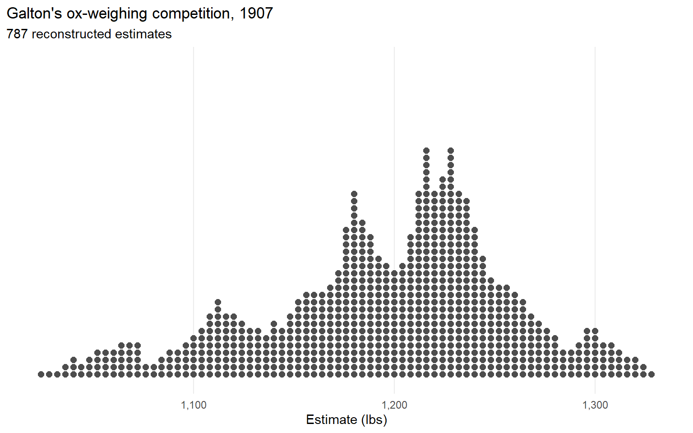
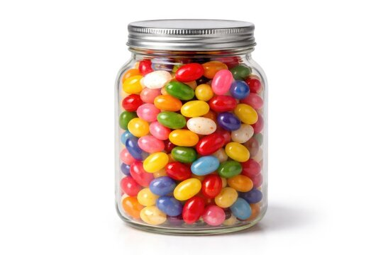
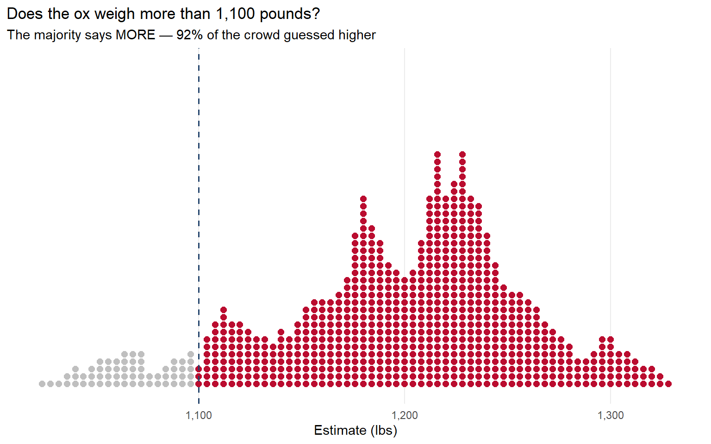
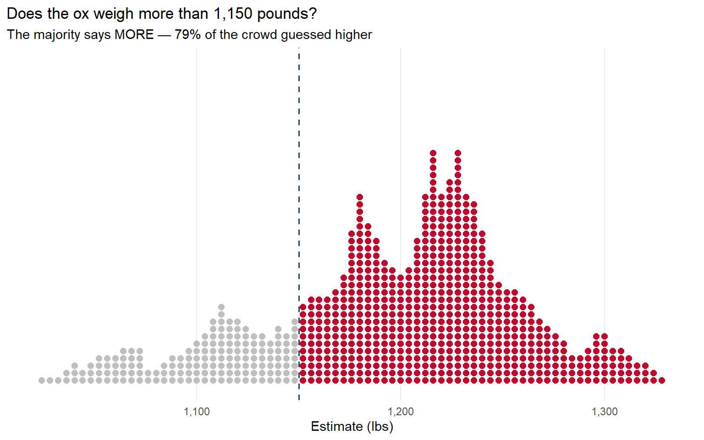
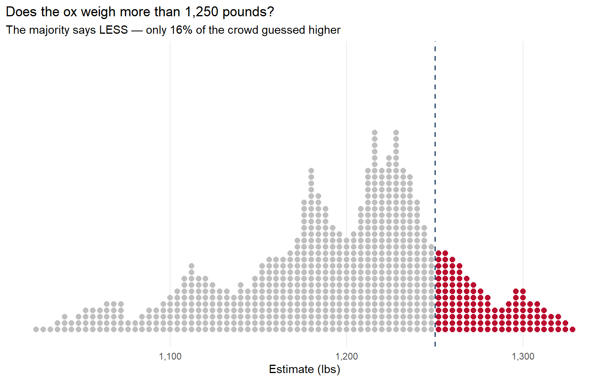
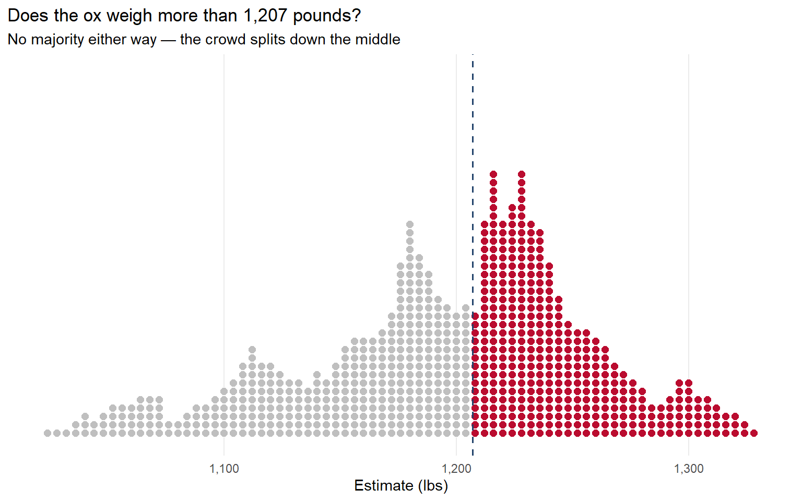
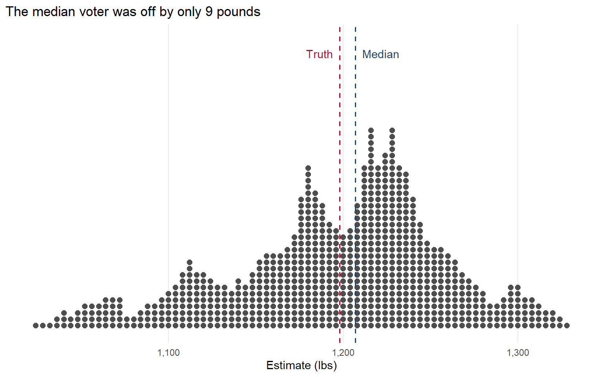

Median Voter Theorem
POLS 3220: How to Predict the Future
Warmup

Previously…
Last time, we introduced the Condorcet Jury Theorem.
- Remind me what that was?
Today: What if the decision being made isn’t binary (Yes/No)?
What if the group is trying to make a decision about a continuous value (like a probability)?
Wisdom of Crowds
Consider the ox weight-judging competition described in Tetlock Chapter 3.
Participants paid sixpence to enter a competition to guess the weight of a “fat ox” (Galton 1907).
Wisdom of Crowds
. . .
What is the “majority judgment” here?
Wisdom of Crowds
Imagine we broke this down into a series of binary (Yes/No) votes.
Instead of asking everyone for a number, ask “Does the ox weigh more than 1,100 pounds?”
If the majority says “Yes”, pick a larger number and ask again.
If the majority says “No”, pick a smaller number and ask again.
Wisdom of Crowds

Wisdom of Crowds

Wisdom of Crowds

Wisdom of Crowds
This process will finally stop when we get to the median estimate.
Wisdom of Crowds

Wisdom of Crowds

Median Voter Theorem
The median voter theorem (Black 1948) says that the median is the only position that cannot be defeated by a majority vote.
This follows from the definition of the median:
50% of the group lies to the right.
50% of the group lies to the left.
Any majority voting bloc (>50%) must include the median.
So we can think of the “majority judgment” as the position of the median voter.
Back to the Warmup Exercise
Takeaways
The Condorcet Jury Theorem shows when we can expect majority rule to yield good judgments.
- Individuals should be competent/independent, and you need a large group.
The median voter theorem shows that, when you’re making judgments about a continuous value, majority = median.
- This is why the “Crowd” point on our course website is the median forecast.
Next Time: What to do when we don’t quite believe that independence assumption…
References
Black, Duncan. 1948. “On the Rationale of Group Decision-Making.” Journal of Political Economy 56 (1): 23–34. https://doi.org/10.1086/256633.
Galton, Francis. 1907. “Vox Populi.” Nature 75 (1949): 450–51. https://doi.org/10.1038/075450a0.